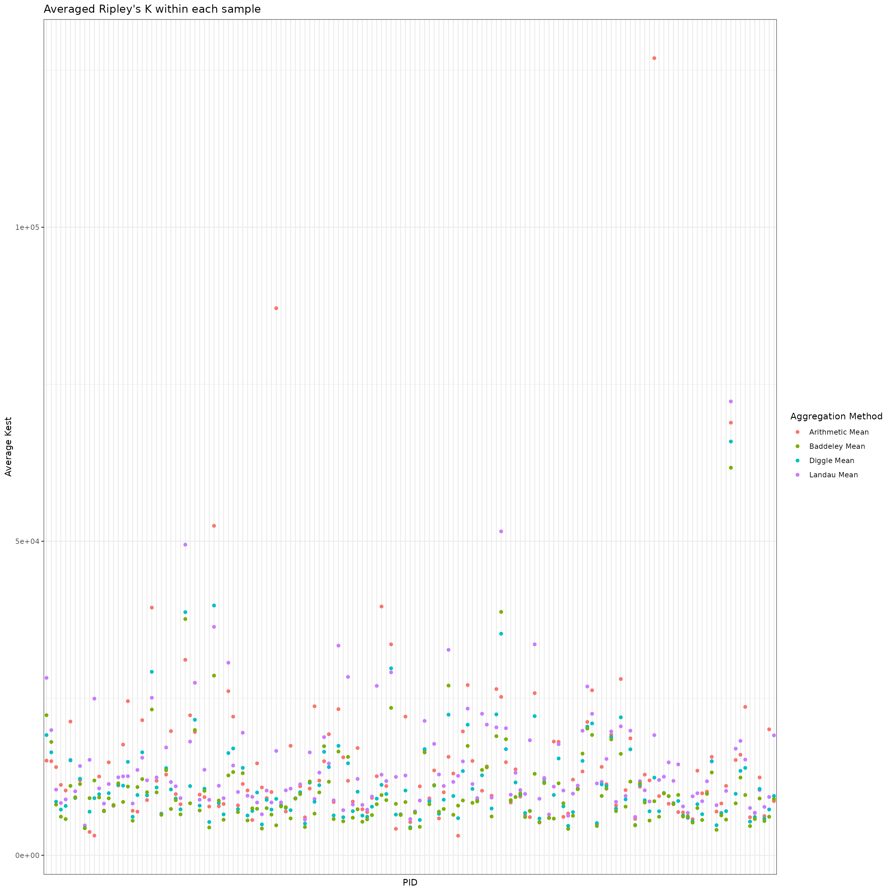

spagg
spagg.RmdIn this vignette, we will demonstrate how to use the
spagg package to aggregate replicated spatial summary
statistics estimated across multiple regions-of-interest (ROIs) imaged
from the same biospecimen, such as a tumor sample. We may possess data
for these specimens from multiplexed immunofluorescence imaging, which
yields spatial information on the cells residing in the tissue.
# Loading in packages
library(spagg)
library(dplyr)
library(magrittr)
library(spatstat)
library(ggplot2)
library(tidyr)Let’s consider using spagg to analyze a multiplexed
immunohistochemistry (mIHC) dataset generated from a non-small cell lung
cancer study by Johnson et al. (2021).
Let’s examine the spatial distribution of CD4 T cells and examine its
association with major histocompatibility complex II (MHCII) status, a
tumor-level label. We will use Ripley’s K to characterize the spatial
distribution of CD4+ T cells.
Since this study cpatured multiple ROIs per tumor sample we need a
way of handling multiple estimates of Ripley’s K for each sample.
spagg provides several ways of doing so.
First, let’s load in the data we will use. This dataset will be
downloaded from http://juliawrobel.com/MI_tutorial/MI_Data.html but is
also available from the VectraPolarisData R package. For
the purposes of this illustration, we do some basic tidying of the data
prior to analysis. The steps to this tidying follow the steps shown in
the link given above. These steps are shown below.
# Load in the data
load(url("http://juliawrobel.com/MI_tutorial/Data/lung.RDA"))
# Label the immune cell types
lung_df <- lung_df %>%
mutate(type = case_when(
phenotype_cd14 == "CD14+" ~ "CD14+ cell",
phenotype_cd19 == "CD19+" ~ "CD19+ B cell",
phenotype_cd4 == "CD4+" ~ "CD4+ T cell",
phenotype_cd8 == "CD8+" ~ "CD8+ T cell",
phenotype_other == "Other+" ~ "Other",
phenotype_ck == "CK+" ~ "Tumor"
))
# Add a column indicating if a sample has >=5% MHCII+ tumor cells
lung_df <- lung_df %>%
dplyr::group_by(patient_id) %>%
dplyr::mutate(mhcII_high = as.numeric(mhcII_status == "high"))
# Change colnames
colnames(lung_df)[colnames(lung_df) == "patient_id"] <- "PID"
# Add a PID column
colnames(lung_df)[colnames(lung_df) == "image_id"] <- "id"
# Filter to just cells detected within the tumor
lung_df_tumor <- lung_df %>% filter(tissue_category == "Tumor")
# Remove grouping
lung_df_tumor <- lung_df_tumor %>% dplyr::ungroup()
# Remove NA types
lung_df_tumor <- lung_df_tumor %>% filter(!is.na(type))We will first consider different approaches to averaging Ripely’s K across ROIs within a tumor sample. Let’s start by defining some notation. Suppose for sample we have ROIs. Let be the number of cells in sample ROI . Let represent the area of sample ROI . Let represent the spatial distribution of CD4+ T cells evaluate at radius .
spagg contains implementations for the following three
weighted averages:
(Diggle, Lange, and Beneš (1991)), (Baddeley et al. (1993)), and (Landau, Rabe-Hesketh, and Everall (2004)) were each proposed as approaches to aggregating replicated Ripley’s K statistics.
Let’s estimate Ripley’s K for on each ROI. Note this may take several seconds (up to 30 seconds) to run.
# Set the radius
r <- 30
# Save the image IDs
ids <- unique(lung_df_tumor$id)
# Initialize a data.frame to store the results for each ROI
results <- lung_df_tumor %>%
dplyr::select(PID, id) %>%
dplyr::distinct() %>%
dplyr::mutate(spatial = NA,
npoints = NA,
area = NA)
# Iterate through the ROIs (this will take a few seconds)
for (i in 1:length(ids)) {
# Save the ith image
image.i <- lung_df_tumor %>%
dplyr::filter(id == ids[i]) %>%
dplyr::select(x, y, type)
# Convert to a point process object
w <- spatstat.geom::convexhull.xy(image.i$x, image.i$y)
image.i.subset <- image.i %>% dplyr::filter(type == "CD4+ T cell")
image.ppp <- spatstat.geom::as.ppp(image.i.subset, W = w)
marks(image.ppp) <- image.i.subset$type
# Compute Kest
Ki <- spatstat.explore::Kest(image.ppp, r = 0:r)
# Calculate the number of points
npoints.i <- spatstat.geom::npoints(image.ppp)
# Calculate the area
area.i <- spatstat.geom::area(image.ppp)
# Save the results
results[results$id == ids[i],]$spatial <- Ki$iso[r+1]
results[results$id == ids[i],]$npoints <- npoints.i
results[results$id == ids[i],]$area <- area.i
}
# View the first few rows
head(results)
#> # A tibble: 6 × 5
#> PID id spatial npoints area
#> <chr> <chr> <dbl> <int> <dbl>
#> 1 #01 0-889-121 #01 0-889-121 P44_[40864,18015].im3 0 2 301361.
#> 2 #01 0-889-121 #01 0-889-121 P44_[42689,19214].im3 47576. 4 285454.
#> 3 #01 0-889-121 #01 0-889-121 P44_[42806,16718].im3 0 3 332974.
#> 4 #01 0-889-121 #01 0-889-121 P44_[44311,17766].im3 0 5 333936.
#> 5 #01 0-889-121 #01 0-889-121 P44_[45366,16647].im3 27781. 9 333376.
#> 6 #02 1-037-393 #02 1-037-393 P44_[56576,16907].im3 NaN 0 52210.Some of the Ripley’s K estimates will be NaNs as a
result of there being only
or
CD4+ T cell in the corresponding image. We will remove these ROIs from
our analysis. We can now visualize the distribution of the spatial
summaries within each image as an illustration of the variation in
spatial distribution of CD4+ T cells across ROIs. The figure below
highlights the variation in Ripley’s K statistics within a single
sample.
# Remove NAs
results <- results[!is.na(results$spatial),]
# Visualize the distribution of spatial summaries within each sample
results %>%
dplyr::mutate(PID = factor(PID)) %>%
ggplot(aes(x = PID, y = spatial, group = PID)) +
geom_boxplot() +
theme_bw() +
theme(axis.text.x = element_blank(),
axis.ticks.x = element_blank()) +
ggtitle("Ripley's K statistics for ROIs within a each sample") +
ylab("Kest")
After that, we will compute the weighted averages given above. We will also compute a standard arithmetic mean as a comparison. Below, we visualize the spread of the various spatial aggregation methods within each sample. For some samples, the averages yield similar values. For others, their values show large variation.
# Compute averages
results_mean <- results %>%
dplyr::group_by(PID) %>%
dplyr::summarise_at(dplyr::vars(spatial),
list(~mean(.x),
~landau.avg(K.vec = .x, area.vec = area, n.vec = npoints),
~diggle.avg(K.vec = .x, n.vec = npoints),
~baddeley.avg(K.vec = .x, n.vec = npoints)))
# Plot the averages
results_mean %>%
tidyr::pivot_longer(2:5, names_to = "mean", values_to = "value") %>%
dplyr::mutate(mean = recode(mean,
"mean" = "Arithmetic Mean",
"landau.avg" = "Landau Mean",
"diggle.avg" = "Diggle Mean",
"baddeley.avg" = "Baddeley Mean")) %>%
ggplot(aes(x = PID, y = value, group = mean, color = mean)) +
geom_point() +
theme_bw() +
theme(axis.text.x = element_blank(),
axis.ticks.x = element_blank()) +
ylab("Average Kest") +
ggtitle("Averaged Ripley's K within each sample") +
scale_color_discrete(name = "Aggregation Method")
We now have a data.frame with a column corresponding to each average. Let’s add in the MHCII-high status variable so we can do association testing. We would like to test if the spatial arrangement of CD4+ T cells is associated with MHCII-high status. We will compare the significance of this association across the four spatial aggregation methods.
# First, check the ordering matches
all(unique(lung_df_tumor$PID) == results_mean$PID) # TRUE!
#> [1] TRUE
# Add in MHCII-high status
results_mean$mhcII_high <- lung_df_tumor %>%
dplyr::select(PID, mhcII_high) %>%
dplyr::distinct() %>%
dplyr::select(mhcII_high) %>%
unlist()
# Test for an association between CD4 T cell spatial distributions and MHCII-high status
mean.glm <- glm(mhcII_high ~ mean, data = results_mean, family = binomial())
diggle.glm <- glm(mhcII_high ~ diggle.avg, data = results_mean, family = binomial())
baddeley.glm <- glm(mhcII_high ~ baddeley.avg, data = results_mean, family = binomial())
landau.glm <- glm(mhcII_high ~ landau.avg, data = results_mean, family = binomial())
# P-values from each approach
summary(mean.glm)$coef[2,4]
#> [1] 0.2591465
summary(diggle.glm)$coef[2,4]
#> [1] 0.3146754
summary(baddeley.glm)$coef[2,4]
#> [1] 0.3192316
summary(landau.glm)$coef[2,4]
#> [1] 0.3509682We did not find any significant associations between the spatial distribution of CD4 T cells as estimated by Ripley’s K and MHCII-high status at a radius of .
We now illustrate using ensemble testing to test the same hypothesis.
spagg contains implementations for three different
approaches:
Standard ensemble testing: in this approach,
spaggrandomly generates weights from a standard normal distribution which are used to construct a weighted mean of the Ripley’s K estimates obtained from each ROI. This process is repeated many times. For each random set of weights, the association between the weighted mean spatial summary and sample-level outcomes is tested. The resulting p-values are combined using the Cauchy combination test. This approach is contained in theensemble.avgfunction.Resampling: in this approach,
spaggrandomly samples one spatial summary statisti per sample and tests for an association with the sample-level outcome. This process is repeated many times and the resulting p-values are combined using the Cauchy combination test. This approach is contained in theresampling.avgfunction.Combination testing: in this approach,
spaggrandomly generates weights from a standard normal distribution and uses these weights as well as the number of cells in each ROI to construct a weighted mean of Ripley’s K estimates. This process is repeated many times and the resulting p-values are combined using the Cauchy combination test. This approach is contained in thecombo.weight.avgfunction.
We now run each of these approaches to testing.
# Add the outcome back into the data
results <- left_join(results,
lung_df_tumor %>% dplyr::select(id, PID, mhcII_high) %>% distinct(),
by = c("id", "PID"))
# Run each ensemble test
ensemble.res <- ensemble.avg(data = results, group = "PID",
outcome = "mhcII_high", model = "logistic")
resample.res <- resampling.avg(data = results, group = "PID",
outcome = "mhcII_high", model = "logistic")
combo.res <- combo.weight.avg(data = results, group = "PID",
outcome = "mhcII_high", model = "logistic")
# P-values
ensemble.res$pval
#> [1] 0.3749332
resample.res$pval
#> [1] 0.5085036
combo.res$pval
#> [1] 0.4716415The ensemble p-values also show no significance in the association between the spatial clustering of CD4+ T cells and MHCII-high status among tumor samples.